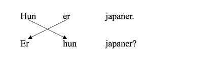
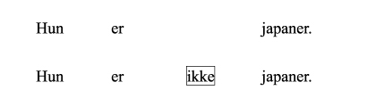
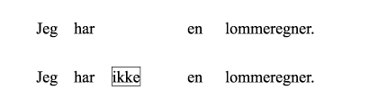
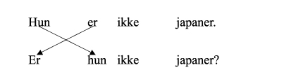
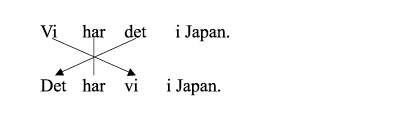
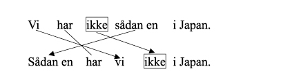

これまでに平叙文（事実を述べる場合に用いる文），疑問文の両方を見てきました．ここでは，それぞれの文における語順について確認しましょう．
まず，肯定平叙文を疑問文にしてみましょう．

➢ 第１課でも確認しましたが，疑問文は通常主語と動詞の語順を入れ替えて作ります．
次に肯定平叙文から否定平叙文を作ってみましょう．肯定平叙文を否定平叙文にするためには，否定の副詞ikkeを使いますが，ikkeの置かれる位置に注意してください．

➢ 否定の副詞ikkeが置かれる位置は，動詞と補語の間です．

➢ 否定の副詞ikkeが置かれる位置は，動詞と目的語の間です．
それでは，否定平叙文から否定疑問文を作ってみましょう．

➢ 否定平叙文から否定疑問文を作る場合でも，主語と動詞の位置を入れ替えるだけです．
デンマーク語では，平叙文を主語以外の要素で始めることもできます．まずは，主語から始まる肯定平叙文を，目的語から始まる肯定平叙文に変えてみましょう．

➢ 主語と目的語の位置が交代しますが，動詞は必ず2番目の要素となっていることに注意してください．
否定平叙文の場合はどうなるでしょうか？

➢ 少しややこしくなってきましたが，まず，肯定平叙文の場合と同様に，主語と目的語の位置を交代させます．そして動詞は必ず2番目に置きます．そして否定の副詞ikkeの位置は，主語の直後であることに注意してください．